大三島 素泊り茶房
トマリギ
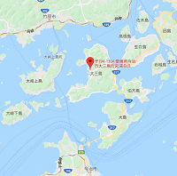
| あるじ | 森(中村)美咲(H17卒) |
| ところ | 愛媛県今治市大三島町宮浦88
TEL:080-8493-5416
「トマリギ」のホームページ
|
| あきない | 年中無休 |
| Ｐ Ｒ | 食事提供なしの素泊まり宿
大三島観光の中心地、大山祇神社まで歩いて10分
近隣にコンビニ・スーパー・温浴施設などがあり
一般的なドミトリーに比べ安心・快適な工夫がいっぱい
サイクリストにやさしい施設・サービス
オーナーこだわりのお茶が愉しめます |
スナック
胡蝶
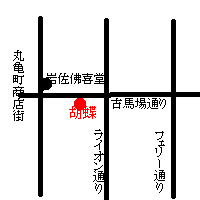
| あるじ | 久保仁美(S48卒) |
| ところ | 高松市古馬場町8-11 2F
TEL:087-823-7434
|
| あきない | |
| Ｐ Ｒ | |
バー
べろんちょ
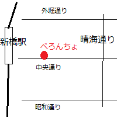
| あるじ | 森英二(58卒) |
| ところ | 中央区銀座８－８－７ 第３ソワレドビルＢ１
TEL:03-3571-8006
お店のホームページ
|
| あきない | 月－土 夕方から未明(？)まで 日・祝は応相談 |
| Ｐ Ｒ | 東京玉翠会のたまり場
|
ホテル
プラム
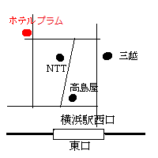
| あるじ | 平山(福山)敦子(47卒) |
| ところ | 横浜市西区北幸２－９－１ 045(314)3111
横浜駅西口より徒歩７分
|
| あきない | 年中無休 |
Ｐ Ｒ | チャペルもある本格的シティホテル。
レストラン「菜心賓館」は横浜中華街のお店よりも美味しいと評判。同窓会にも最適。
ホテルのHPはこちら。 |
創作うどん・こだわり厨房
一滴八銭屋
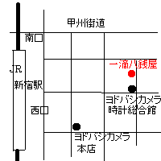
| あるじ | 大藪恵弘(３４年卒)・(実際の営業は、お子さんたち) |
| ところ | 新宿区西新宿１－１５－９柳沢ビル２F・３F
03(3342)8889
JR新宿駅西口 徒歩３分
|
| あきない | 平日11:00-23:00 年中無休
|
| Ｐ Ｒ | 黒おでんが名物
|
饂飩
でですけ
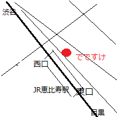
| あるじ | 千葉(十河)君代(47年卒)・社長が実弟 |
| ところ | 渋谷区恵比寿1-8-14大黒ビル2F 03(3444)5511
JR恵比寿駅西口を出て、徒歩40秒
お品書き・道順など詳細はこちら
|
| あきない | 昼 11時30分～14時
夜 17時～4時（ラストオーダー 3時）
日・祭日 17時～24時（ラストオーダー 11時）
|
| Ｐ Ｒ | さぬきで修行した本場さぬきうどん
夜はお酒も飲める
|
婦人輸入雑貨
カニワトーキョ
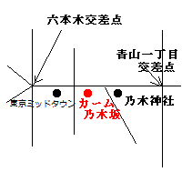
| あるじ | 岩井耀子（４２年卒） |
| ところ | 港区赤坂９－６－２７カーム乃木坂１Ｆ 03(3401)4509
千代田線・乃木坂駅・３番出口より徒歩２分
|
| あきない | 朝１０時から夜７時 日・祝休み |
点心・中華風料理
吉乃坊
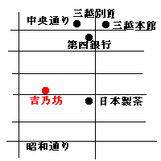
| あるじ | 吉野 頼寿（２８年卒） |
| ところ | 中央区日本橋室町１－１１－６ 03(3241)6764
地下鉄半蔵門線三越前駅より徒歩２分 |
| あきない | 昼１１時から２時、夕方５時から１０時（土・日は昼のみ） |
| Ｐ Ｒ | 餃子（ピリカラ、チョイカラ、パリパリ）は美味しくて、評判がいい。 |
スパゲッティー・オーブン料理
パークパスタ
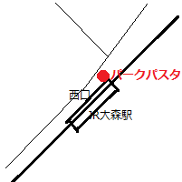
| あるじ | 大橋(十河)圭見(６１年卒) |
| ところ | 大田区山王２－２－１４ 03(3776)5596
ＪＲ大森駅すぐ
|
| あきない | 11:30-15:00 17:30-21:30 日休み |
| Ｐ Ｒ | クリームスパゲッティ９５０円より
チャイニーズスパゲッティ１０００円より |
時計宝飾
スナガ時計宝飾店
| あるじ | 須永玲子（３７年卒） |
| ところ | 杉並区和泉２－３３－１９ 03(3323)5295
京王線代田橋駅 仲通り商店街徒歩８分 |
| あきない | ９時～２０時 年中無休 |
| Ｐ Ｒ | 古時計の修理、指輪の再生もいたします。 |
サロン・ド・ギャラリー
ココモンド
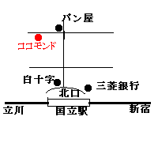
| あるじ | 瀬尾洋子（４２年卒） |
| ところ | 国分寺市光町１－４２－８ 0425(77)5790
ＪＲ国立駅北口 徒歩３分 |
| あきない | １１時から１８時 月曜定休 |
| Ｐ Ｒ | アンティーク家具の中で、ホームメイドケーキが楽しめます。 |
家庭教師センター
ＩＮＦ
| あるじ | 白濱秀樹(49年卒) |
| ところ | 横浜本部 横浜市保土ヶ谷区岩井町１０－９第三島蔵屋ビル２Ｆ．３Ｆ
TEL 045(331)7587 |
Ｐ Ｒ | 高高卒業生のための高高卒業生による家庭教師センター。
東京の大学に通っている高高卒業生には、安心して働けるアルバイト先の提供を、高高OBには、安心して頼める家庭教師を、という良好な関係を目指している。
対象生徒、授業料などはこちらのページを
問い合わせはこちらに |
ミュージックカフェ
スイートメロディー
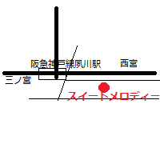
| あるじ | 清水正秋(46年卒) |
| ところ |
〒662-0047 兵庫県西宮市寿町２-23寿ハイツ102
TEL 090-3546-4498
|
Ｐ Ｒ | 西宮夙川のはずれにある隠れ家のような小さな音楽喫茶店。永遠の名曲、あの頃のヒット曲をBGMに、しばし時を忘れておくつろぎください。
スイートメロディーのサイト
|
マグカップの制作
MAGCOM
オリジナル食器、雑貨販売
e-tabletops
| あるじ | 宮崎高子(41年卒) |
| ところ | 愛知県尾張旭市狩宿新町2-93
TEL 0561-53-9511
株式会社 ミヤザキクリエイト
|
Ｐ Ｒ | マグコム
オリジナルマグカップの制作。
マグカップは毎日使ってもらえる広告塔。
詳細、注文はこちらで
イーテーブルトップス
希望のイニシャル・星座マークで創作するプチオリジナル食器＆ダビデの星アクセサリーの販売
日本列島は龍の形に似ているという発想からデザインされた“龍国日本”グッズの販売
|